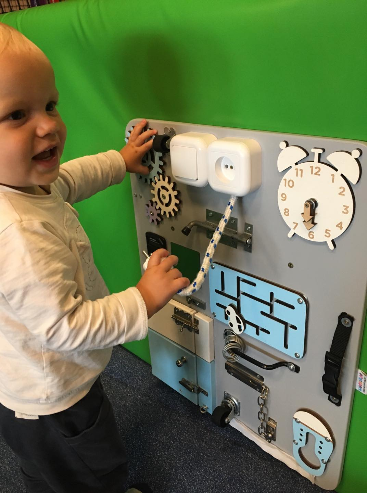

How many years of experience programmers have?
Stackoverflow Survey 2015

Stackoverflow Survey 2017

Stackoverflow Survey 2018

Stackoverflow Survey 2019


Career Planning
What is better for career development?
What kind of progress?
Programming Skill
Position
Earning
Communication
Costs of progress
Programming Skill -> risk of technology choice
Position -> responsibilities
Earning -> boss expectations
Dilemmas
Stable development in one company
Or dynamic changes of environment?
Corporations or small businesses?
One product or service?
Investing in one particular technology
or changing the technology every 1-3 years?
Going full-stack
or front-end?
Develop skills you use everyday
or develop for position
which requires different skills?
But about one we can agree
raise at least once a year!
But don't change your work every year!
Industry problems
Best is forbidden!
Good practices list
Be patient ;-)
Help others in return
Initiate helping others
Preserve "Fuck you!" money
Exercise for interviews
Go social!
Communities are for you!
Get support
Support in return
Attend as a speaker / supporter / volunteer / trainer
Practice your skills
Build your contacts network